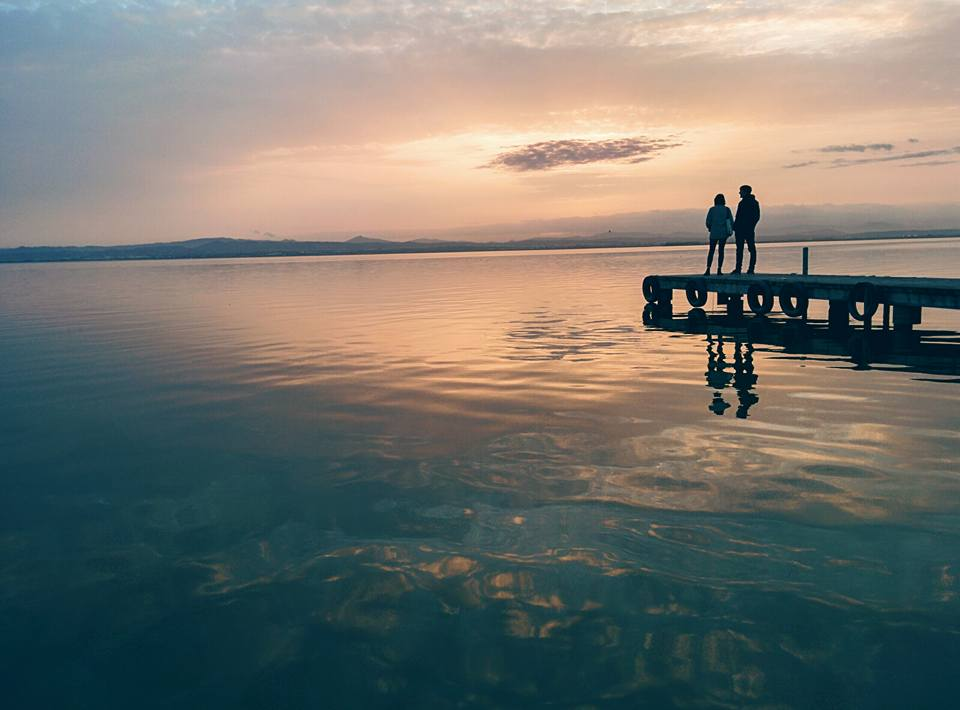

Cómo ir a la Albufera y El Palmar en autobús desde Valencia
Muchos viajeros y vecinos creen que hace falta coche para pasar el día en L'Albufera. Te explicamos paso a paso cómo hacer el plan más especial de Valencia utilizando el autobús urbano de la EMT: pinada, dunas, barracas y puesta de sol sobre el agua.

Paso 1: Subir al autobús 24 o 25 en el centro de Valencia (sin coche ni excursiones caras)
Uno de los mayores privilegios de Valencia es tener un parque natural de más de 21.000 hectáreas conectado directamente con el centro histórico mediante la red de autobuses rojos municipales (EMT). No necesitas alquilar coche ni contratar un autobús turístico: las líneas 24 (con destino El Palmar) y 25 (con destino El Perellonet) salen cada 20–30 minutos desde el entorno de Porta de la Mar y bordean el antiguo cauce del Turia pasando junto al Palau de la Música y la Ciudad de las Artes.
En apenas veinticinco minutos de trayecto verás cómo desaparecen los edificios y la carretera se adentra entre el mar Mediterráneo a la izquierda y los arrozales y pinares de la Devesa del Saler a la derecha. Con el mismo billete urbano o tarjeta de transporte puedes bajarte a mitad de camino para caminar entre los pinos y el lago, y volver a subir más tarde para cenar o regresar al centro.
Paso 2: El sendero botánico de la Devesa del Saler y las dunas vírgenes
Si sales de Valencia a primera hora de la tarde, bájate una parada antes del embarcadero para recorrer el sendero señalizado de la Devesa del Saler, el cordón dunar y bosque mediterráneo que separa la laguna de agua dulce del mar abierto.
Caminarás en llano por pasarelas y caminos de arena compacta bajo pinos carrascos doblados por la brisa marina, lentiscos, mirto y romero en flor, pasando junto a las 'malladas' (pequeñas depresiones entre las dunas que se inundan en otoño e invierno y atraen a garzas y flamencos). En menos de diez minutos puedes asomarte a la playa salvaje de la Garrofera o de la Devesa, sin un solo bloque de apartamentos a la vista, antes de cruzar la pasarela peatonal hacia la laguna.
Paso 3: El pueblo isleño de El Palmar y sus barracas tradicionales junto a las acequias
El corazón humano e histórico de la Albufera es El Palmar, una antigua isla de pescadores rodeada de canales y campos de arroz que inspiró la novela 'Cañas y barro' de Vicente Blasco Ibáñez en 1902. Al recorrer sus dos calles principales y los caminos traseros que dan a las acequias verás en pie auténticas barracas valencianas del siglo XIX, con sus paredes encaladas de blanco inmaculado y sus empinadas cubiertas de carrizo diseñadas para evacuar la lluvia.
En los embarcaderos de madera de El Palmar (o en el de la Gola de Pujol si prefieres no entrar hasta el pueblo) puedes subir por unos 6 € por persona a un 'albuferenc', las barcas tradicionales de madera de fondo plano que navegan silenciosamente entre las matas de cañizo hasta el centro de la laguna.
Paso 4: El momento mágico del atardecer en el Mirador de la Gola de Pujol y dónde probar el all i pebre
Incluso si decides no subir a la barca y hacer el plan completamente gratis, el punto imprescindible del día llega treinta minutos antes de la puesta de sol en el Mirador y Embarcadero de la Gola de Pujol (el canal que comunica la Albufera con el Mediterráneo).
Su pasarela de madera se adentra directamente sobre el espejo de agua mirando hacia el oeste: cuando el sol baja detrás de las montañas del interior de Valencia, toda la superficie tranquila del lago se tiñe primero de dorado y después de tonos violetas y rojizos mientras regresan las bandadas de aves acuáticas.
Si has hecho el plan a mediodía o primera hora de la tarde en El Palmar, no te vayas sin probar en alguna de sus casas de comidas familiares una cazuela de barro de 'all i pebre' (la receta tradicional de los pescadores con patata, pimentón, ajo y guindilla) o un arroz a banda mirando directamente a los campos de arroz.
Preguntas frecuentes
¿A qué hora sale el último autobús 24 o 25 de vuelta desde la Albufera a Valencia?
En otoño e invierno los últimos autobuses de las líneas 24 y 25 desde El Palmar y el Embarcadero de la Gola de Pujol hacia el centro de Valencia pasan entre las 21:00 y las 22:15 h (en verano amplían horario hasta pasadas las 23:00 h), tiempo de sobra para ver el atardecer completo.
¿En qué época del año están más bonitos los arrozales de la Albufera?
Tiene tres momentos espectaculares: de junio a agosto cuando todo el lago es un manto verde intenso de espigas de arroz; en septiembre durante la siega; y de noviembre a febrero (la 'perellonà'), cuando se inundan todos los campos y la Albufera multiplica su espejo de agua para el atardecer.